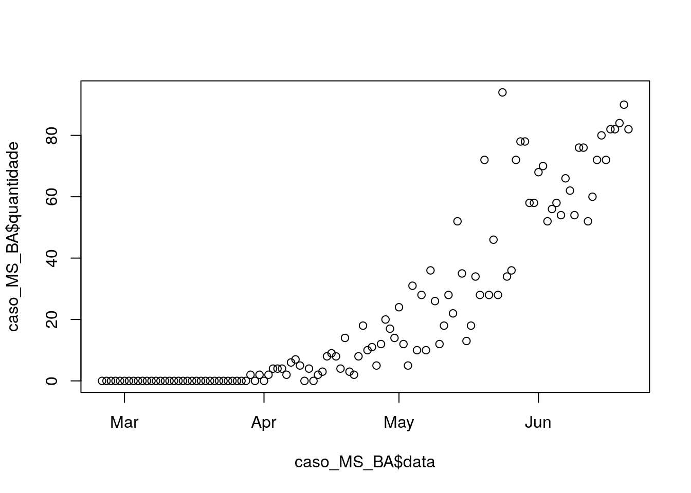
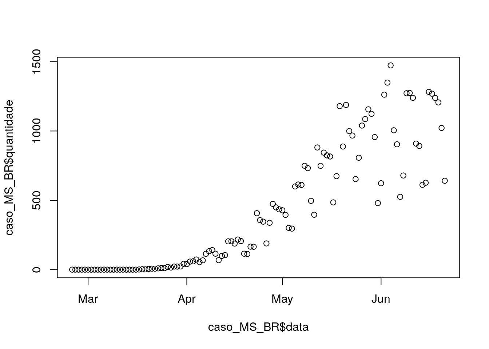
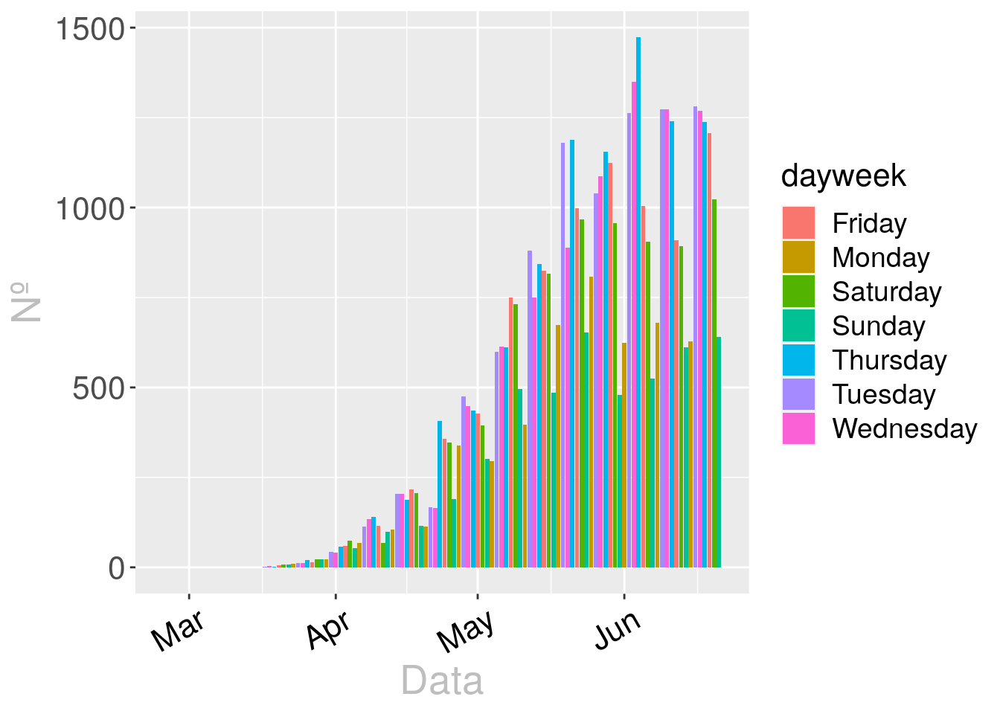

Capítulo 5 Aplicações
Neste capítulo apresentaremos alguns exemplos de aplicações de R.
5.1 Exemplo 1
5.1.1 Carregamento de dados
########################################################################################
#1-Carregamento de dados
#1.1-Dados do Covid19
# referencia(22-06-2020) - (https://data.brasil.io/dataset/covid19/_meta/list.html)
library(readr)
caso <- read_csv("data/caso.csv")## Parsed with column specification:
## cols(
## date = col_date(format = ""),
## state = col_character(),
## city = col_character(),
## place_type = col_character(),
## confirmed = col_double(),
## deaths = col_double(),
## order_for_place = col_double(),
## is_last = col_logical(),
## estimated_population_2019 = col_double(),
## city_ibge_code = col_double(),
## confirmed_per_100k_inhabitants = col_double(),
## death_rate = col_double()
## )5.2 Análise de dados
5.2.1 Análise Exploratória
## ── Attaching packages ──── tidyverse 1.3.0 ──## ✓ ggplot2 3.3.2 ✓ dplyr 1.0.0
## ✓ tidyr 1.1.0 ✓ stringr 1.4.0
## ✓ purrr 0.3.4 ✓ forcats 0.5.0## ── Conflicts ─────── tidyverse_conflicts() ──
## x dplyr::filter() masks stats::filter()
## x dplyr::lag() masks stats::lag()## Parsed with column specification:
## cols(
## regiao = col_character(),
## estado = col_character(),
## municipio = col_logical(),
## coduf = col_double(),
## codmun = col_logical(),
## codRegiaoSaude = col_logical(),
## nomeRegiaoSaude = col_logical(),
## data = col_character(),
## semanaEpi = col_double(),
## populacaoTCU2019 = col_double(),
## casosAcumulado = col_double(),
## casosNovos = col_double(),
## obitosAcumulado = col_double(),
## obitosNovos = col_double(),
## Recuperadosnovos = col_double(),
## emAcompanhamentoNovos = col_double()
## )## Warning: 1727211 parsing failures.
## row col expected actual file
## 3305 codmun 1/0/T/F/TRUE/FALSE 110000 'data/HIST_PAINEL_COVIDBR_21jun2020.csv'
## 3306 codmun 1/0/T/F/TRUE/FALSE 110000 'data/HIST_PAINEL_COVIDBR_21jun2020.csv'
## 3307 codmun 1/0/T/F/TRUE/FALSE 110000 'data/HIST_PAINEL_COVIDBR_21jun2020.csv'
## 3308 codmun 1/0/T/F/TRUE/FALSE 110000 'data/HIST_PAINEL_COVIDBR_21jun2020.csv'
## 3309 codmun 1/0/T/F/TRUE/FALSE 110000 'data/HIST_PAINEL_COVIDBR_21jun2020.csv'
## .... ...... .................. ...... ........................................
## See problems(...) for more details.## `summarise()` ungrouping output (override with `.groups` argument)
## `summarise()` ungrouping output (override with `.groups` argument)